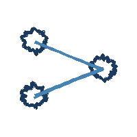
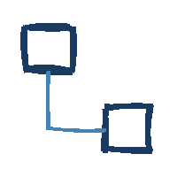

About
Quta
関東の大学に通う、情報工学専攻の大学4年生です。
現在はコンピュータアーキテクチャ分野の研究室に所属しています。
低レイヤの技術やインフラ技術を中心に、AIやゲーム制作等、幅広く学んでいます。
基本情報
出身地: 富山
使用言語: Python, C, Java（2年以上使用） > HTML, SQL, C#（ある程度使用） > JavaScript, CSS, C++, Rust, Go, OCaml, Pascal（場面に応じて調べて使用、勉強中）
アピールポイント: 3週間の留学経験有, フランス語サークル学生代表（1年間）, 5教科指導の塾講師（約3年間）
資格・戦歴
2025.10 TOEIC L&R Score: 730（1年前から点数が下がったため、現在英語を再度勉強中）
2025.08 CG-ARTS検定 CGエンジニア検定エキスパート合格、画像処理エンジニア検定エキスパート合格
2025.10 応用情報技術者試験 午前試験83.75%, 午後試験59.00% 不合格（午後試験の1%差で不合格だったため、次回は必ず受かるように勉強中）
Works
制作物・研究の一覧です。カテゴリのアイコンと日付を付けています。解説内のリンクはそのまま押せます。
AWSを用いた「SNSでバズった飲食店マップ」Webアプリケーション
大学の授業の一環として、AWSとSNSのAPIを用いて、最近SNSでバズった飲食店の位置を地図上に表示するWebアプリケーションを開発しました。
レポートを見る学内のAIコンペティション 3位入賞
2025年12月〜2026年1月に開催された大学機関主催 第1回メディカルAI開発コンペティションにおいて3位入賞しました。題材は脳波データから運動意図の判定を行うもので、データ拡張やアンサンブル学習を行いました。
詳しく解説を見る
Machine Learningアイスホッケーゲームにおける、強化学習と反実仮想機械学習の比較
古典の助動詞でしか「反実仮想」という単語を知らなかったが、機械学習分野にもこの語を含む単語が存在していると知り、その手法を学ぶとともに、聞きなじみのある強化学習と比較してみた。
詳しく解説を見る
Networkソケット通信を活用した2者間チャットシステム
Socket通信、Raw Socket通信を学習してC言語で実装し、同じ機能をGo言語でも実装して比較しました。
GitHub で見るResearch
自分がどうやって研究の分野やテーマを決めているのか、今なにを学んでいるのかを整理するページです。 自分自身が「なにに興味があって、なにをしているのか」を理解するための場所でもあります。
いまの立ち位置
所属：コンピュータアーキテクチャ分野の研究室。低レイヤ／インフラ技術を軸に、 そこから派生してグラフィックス・セキュリティ・ネットワークへ関心を広げています。 「授業で触れて面白かったもの」→「本や資料で深掘り」→「小さく実装して確かめる」という順で興味を固めています。
Graphics
CG-ARTS検定（CGエンジニア／画像処理）で基礎を固めた分野。
- 読んだ論文・資料：追記予定
- 気になっているテーマ：追記予定
Architecture
研究室の主分野。ハードウェアとソフトウェアの境界に興味。
- 読んでいる本：コンピュータの構成と設計 第6版 上
- 次に読む：追記予定
Security
最近知って面白かった用語・概念を書き留める場所。
- 最近知った用語：追記予定
Network / Infra
ソケット通信の実装やAWSの学習から広がった関心。
- 読んでいる本：図解TCP/IP ／ 図解AWS
- 作ったもの：C/Go による2者間チャット（Works 参照）
Book History
読んだ本の記録です。コメントは「学んだこと」や「読んで感じたこと」。分量が多いものは別ページにする予定です。書影は準備中
コンビニ人間
最後の講評の部分で、作品の文学的な深みに気付かずに読み通していたと感じ、そのまま2周目に入った。
ワークスタイル2030
ソフトウェア開発のワークスタイル2030
学内の講演会で配られたため読んだが、生成AIがIT業界の今後にどう影響していくかの見通しがより明確になった。
図解TCP/IP
まとめ作成中
リーダブルコード
まとめ作成中
第6版 上
コンピュータの構成と設計 第6版 上
まとめ作成中
チャレンジブック 第2版
プログラミングコンテストチャレンジブック 第2版
まとめ作成中
図解AWS 仕組みとサービスがたった1日でよくわかる
まとめ作成中
三体
読書中
Picture Gallery
白い部屋の3D GUI版は将来の実装予定。まずは2D版です。 机の上の「地球儀」＝撮った場所で見る、「木」＝時系列で見る、という2つの入り口です。 写真は準備中
Hobby
趣味の一覧です。
ゲーム
主にPlayStation 4/5でRPGやアクションゲームを楽しんでいます。
現在プレイ中：ドラクエ3リメイク、モンハンワイルズ
過去プレイ：FF10, 15, 16, 7Remake, タクティクス, DQ1, 5, 8, 11, オクトラ, モンハンWorld, APEX, Horizon, Elden Ring, スーパーマリオ など
プレイしたい：DQ7 Remake
フランス留学（2024.02）
フランス・リヨンの大学に3週間ほど留学しました。文化交流やフィールドワーク、低電力通信に関する講義を受け、週末はパリ観光などを楽しみました。
台湾旅行（2025.03）
家族と2泊3日の台湾旅行に行きました。料理が特に美味しくて、好物のルーロー飯は4回も食べました。
面白いUIづくり（2026.02）
Web技術を使ったゲームやインタラクションを作っています。ホーム背景の墨流し風アニメーションや、旧サイトの「鬼ごっこ」ゲームなどはその一例です。
ホーム画面のスライムの映像は、手描きしたスライムをSoraにアニメ化してもらいました（※足が生えて蛙みたいになる沼にはまり、想像通りの動きにするのが難しかった）。
料理
準備中
映画
準備中
YouTube
準備中
音楽
準備中
Links
GitHub
これまでに開発したプロジェクトのソースコードや、個人開発のリポジトリを公開しています。
AtCoderAtCoder
競技プログラミングのコンテストにほぼ毎週参加しています。現在のレートや回答履歴はこちら。
X (Twitter)
準備中
研究室
準備中